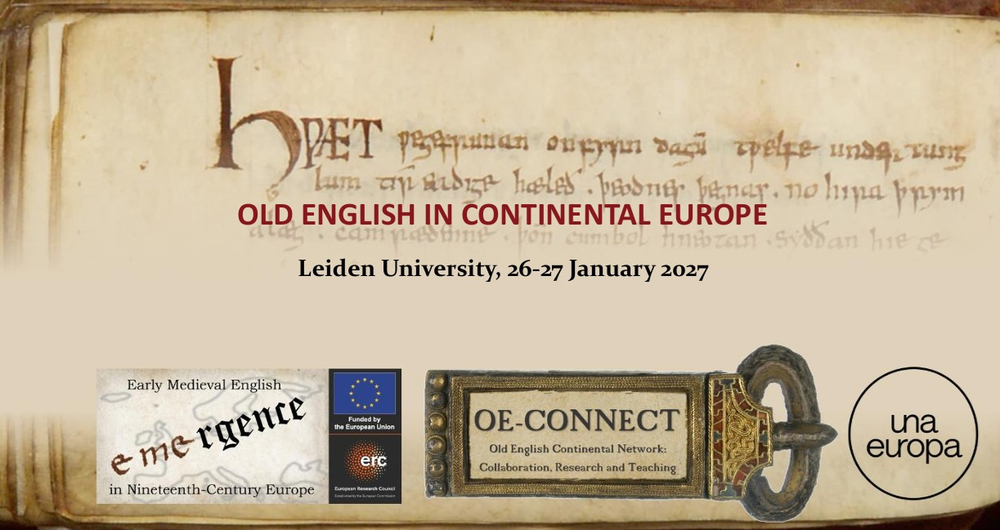

A hybrid conference, co-organized by OE-CONNECT (Una Europa; Jagiellonian University Kraków – Leiden University – University of Zurich) and EMERGENCE (ERC Horizon Europe; Leiden University).
We warmly invite researchers and teachers working on the linguistic and cultural heritage of early medieval
England (c. 500–1100 CE) to attend this hybrid conference on Old English in Continental Europe, to take place
at Leiden University (& online, via Zoom) from 26-27 January 2027. The event seeks to bring together scholars to exchange research,
teaching practices, and resources, as well as to consider the particular opportunities and challenges of studying
and teaching Old English beyond the Anglophone world.
Our preliminary programme features 21 speakers from 8 different countries:
Attendance is free (including lunch, coffee/tea and closing drinks), but registration is required. If you are interested in attending conference, please let us know by filling out the registration form below: